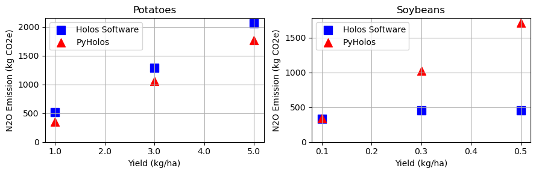
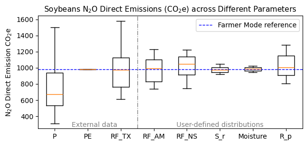

| Source | Crop | Yield | Aboveground Carbon Input | Belowground Carbon Input | N2O-N From Crop Residues | N2O Direct CO2e |
|---|---|---|---|---|---|---|
| Holos Software | Potatoes | 10000 | 365.32 | 15.28 | 0.90 | 521.08 |
| Holos Software | Potatoes | 30000 | 1095.96 | 45.86 | 2.70 | 1293.98 |
| Holos Software | Potatoes | 50000 | 1826.60 | 76.43 | 4.50 | 2066.88 |
| PyHolos | Potatoes | 10000 | 365.32 | 15.29 | 0.83 | 354.47 |
| PyHolos | Potatoes | 30000 | 1095.96 | 45.86 | 2.48 | 1063.40 |
| PyHolos | Potatoes | 50000 | 1826.60 | 76.43 | 4.13 | 1772.34 |
MDS Capstone Project Final Report
Empowering Agriculture: Enhanced GHG Emissions Modeling
1 Executive summary
In collaboration with LiteFarm, we developed PyHolos, a Python-based model designed to enhance greenhouse gas emissions calculations, specifically for nitrous oxide. PyHolos integrates seamlessly with the existing LiteFarm framework. It also incorporates external data sources and allows for user-defined parameter ranges, offering improvements over the original Holos model. This product not only provides farmers with emissions estimates for informed decision-making, but also assists researchers by facilitating uncertainty analysis for parameters and regions with significant data variability. While PyHolos is robust, the emission estimates have shown minor discrepancies compared to those of the original Holos software. We recommend ongoing communication with the Holos team for further improvement.
2 Introduction
Climate change presents a major challenge for our planet, with agriculture significantly contributing to greenhouse gas (GHG) emissions through activities such as livestock farming, fertilizer application, and land management practices (Johnson et al. 2007). Farmers are central to addressing this challenge, as their choices in crop selection and farming practices directly impact carbon emissions and the environmental footprint (Jantke et al. 2020). Agricultural choices are influenced by immediate profits, long-term soil health, and the financial benefits of conservation and sustainability programs. Carbon credit, for example, offers farmers the opportunity to earn extra revenue by adopting practices that reduce carbon emissions (Barbato and Strong 2023). However, farmers lack scientific support to balance financial losses from less profitable crops with gains from carbon credits.
Addressing this gap, our partner, the LiteFarm team, leads the way in agricultural innovation. Comprising a diverse group of researchers and developers, they aim to empower farmers, researchers, and policymakers with data-driven tools to make sustainability tangible and actionable. They have developed an application that helps farmers manage daily operations, boosting their income while also encouraging environmentally friendly practices. Now, the team plans to enhance the app by integrating greenhouse gas (GHG) emissions calculations to further support sustainable farming decisions.
Selecting a suitable GHG emissions calculation model is crucial for this task. The LiteFarm team chose the Holos model due to its open-source nature and its endorsement by the Canadian government for reliability (Agriculture & Agri-Food Canada 2022). Unlike commercial models, Holos offers a reliable and free alternative. However, this model has limitations: it operates as a standalone tool and cannot be directly integrated with the LiteFarm framework. It runs exclusively on Windows OS and is developed in C#, restricting its wider usability. Moreover, its fixed parameters limit the model’s flexibility and adaptability for incorporating data from new or alternative sources.
Our project aims to integrate the Holos GHG emission calculation module into the LiteFarm framework, focusing on nitrous oxide (\(N_2O\)) emissions from crop residue. We enhance the existing Holos model to better align with our partner’s needs and goals. Our objectives are:
Model Reconstruction: We aim to rebuild the Holos model in Python for smoother integration with LiteFarm. This shift ensures better compatibility with the app’s existing framework and offers more accessibility and versatility than the original Holos software.
Enhanced Flexibility: We aim to enhance the Holos model for parameter sampling from external data sources or user-defined distributions. This adjustment increases flexibility in model parameterization, adapting to diverse global agricultural environments. Including external data fits our partner’s global research scope and mitigates data scarcity in under-researched regions.
Improved Reliability through Sensitivity Analysis: With the enhanced model, we conduct sensitivity analyses to understand how input variations affect GHG emission estimates. This process is vital for identifying and minimizing uncertainties, thereby helping our partner pinpoint research gaps and provide farmers with accurate, reliable data for informed decision-making.
3 Data science methods
3.1 Model development: PyHolos
We developed the PyHolos model to calculate nitrous oxide emissions from crop residues. After thoroughly reviewing the original Holos model code and technical reports, we identified equations with 23 parameters (see details in Appendix 8.1 and 8.2). Our goal with PyHolos is to keep the core functions of the Holos model while tailoring it to better meet our partner’s needs.
3.1.1 Model Reconstruction
To replicate the original Holos outputs, we reconstructed the Holos model within PyHolos. The model consists of two key components: a Data Loader and a Calculator. Both components are broken down into smaller, manageable steps to enhance structure and functionality. The Data Loader imports parameter values organized into specific categories, while the Calculator processes these values in stages, allowing for intermediate result storage and accuracy validation against the original model outputs (Figure 1).
3.1.2 Enhanced Flexibility
While PyHolos uses Holos’s original fixed parameters for standard operations, we also enhanced its flexibility. We have added modules that retrieve external data, supporting advanced analytical methods such as bootstrapping and sampling (Figure 1).
For climate parameters, we use API calls to access the National Aeronautics and Space Administration/Prediction of World Wide Energy Resources (NASA/POWER; http://power.larc.nasa.gov), and for soil data, we use the Harmonized World Soil Database (Nachtergaele et al. 2023). These enhancements offer global coverage and refined data resolution, boosting the model’s accuracy and relevance.
Additionally, we have introduced customizable modules for setting crop and modifier parameters. This flexibility allows users with domain knowledge to tailor these parameters to their research needs.
3.2 Analysis
3.2.1 Validation of PyHolos Outputs
To ensure PyHolos’ accuracy, we compared its outputs with the original Holos software using the same set of input parameters.
3.2.2 Sensitivity Analysis Using PyHolos
We conducted a sensitivity analysis with real farm locations. Unlike the original Holos model, which uses average climate and soil parameters from broad regions known as ecodistricts, PyHolos samples point-specific data from each farm’s corresponding ecodistrict. This approach assesses uncertainties associated with the Holos model and provides a detailed view of how environmental factors affect calculation. For other fixed variables in Holos where domain knowledge is lacking, we varied parameters by ±25% using a uniform distribution.
We also tested the model’s robustness with a hypothetical dataset of 105 farms, each growing three different crop types. For each crop at each farm, we generated 100 samples for each parameter to assess how different parameters affect the model’s outputs.
4 Data product and results
4.1 Data product - PyHolos
The PyHolos model uses predefined parameters to replicate original Holos outputs and incorporates user-defined variables along with external climate and soil data for greater flexibility (Figure 2). It calculates direct \(N_2O\) emissions from crop residue in two modes: Farmer Mode and Scientific Mode.
The PyHolos program is operated via command line, allowing users to specify the desired mode—Farmer or Scientific—and configure simulations and other settings. This command-line operation facilitates smooth integration with the LifeFarm dashboard and supports batch processing, ideal for extensive data analysis in research scenarios.
src/, in a directory scripts/ on our Github repository (yellow boxes). The main data flows and processes are depicted by thick gray-blue arrows, while black solid lines show module interactions, and black dashed lines indicate the use of farm data across modules. Each box in the diagram contains a hyperlink that directs to the corresponding module, class, or script on our PyHolos GitHub repo. For a detailed view including key attributes and methods for each class, please refer to the full version of this diagram available here.
4.1.1 Model reconstruction: Farmer Mode
Farmer Mode delivers a single, definitive output, ideal for users needing straightforward estimates (e.g., real farmer users). When using default Holos parameters, this mode replicates the original Holos results with the same farm data inputs such as crop type, yield, area. The results are formatted in JSON as a simple dictionary.
4.1.2 Enhanced flexibility: Scientific Mode
Scientific Mode runs simulations by sampling across parameter distributions, generating multiple outputs per parameter. This mode is suitable for users conducting in-depth analyses. Results are formatted in JSON as nested dictionaries to accommodate multiple simulation results per parameter.
A key application of this mode is predicting and understanding emissions extremes and trends. For instance, the integrated external climate data source captures real-time changes, enabling temporal analyses that track emissions trends over time.
4.2 Results
4.2.1 PyHolos model validation
We compared the calculation outputs of PyHolos and Holos for two crop types: potatoes (a root crop) and soybeans (an annual crop). These two crop types use different \(N_2O\) calculation equations and parameters (see details in Appendix 8.1 and 8.2). While Holos software provides some intermediate results for crop residue calculation, aiding in comparison, it lacks intermediate data on emission factor calculation, hindering identification of sources of discrepancies in this aspect of the calculation (see components in the “calculator” module in Figure 2).
For potatoes, PyHolos accurately replicates Holos’ results for above and below-ground carbon inputs (Table 1). However, there are minor differences in nitrogen from crop residues (Table 1). The discrepancies become larger in the final \(N_2O\) emissions, calculated by multiplying the nitrogen from crop residues by the emission factor (Table 1). The origins of these discrepancies are unclear. According to equation 2.5.6-9 in Holos model(also see Appendix 8.2.1 Total Crop Residues), nitrogen from crop residues should equal the sum of above and below-ground inputs multiplied by farm area, as calculated by PyHolos. Nevertheless, Holos results suggest undocumented adjustments in how farm area data is used in calculation. Furthermore, the enlarged discrepancies in final \(N_2O\) emissions indicate differences in emission factor calculations, The absence of intermediate results from Holos in emission factor calculations complicates tracing the sources of these discrepancies.
For soybeans, discrepancies appear more complex compared to root crops. While carbon inputs were consistent for root crops, soybeans show variations across all parameters: above and below-ground inputs, nitrogen from crop residues, and final \(N_2O\) emissions (Table 2). Besides the previously noted discrepancies in farm area usage and emission factor calculations, the sources of other discrepancies remain elusive. The Holos technical report indicates a linear relationship between crop yield and \(N_2O\) emissions, similar to observations in the root crop potatos (Table 1 and Figure 3). However, Holos’ outputs for soybeans do not demonstrate this linearity. This discrepancy may be attributed to ongoing updates and developments within the Holos software, which might not yet be consistently reflected in the documentation.
| Source | Crop | Yield | Aboveground Carbon Input | Belowground Carbon Input | N2O-N From Crop Residues | N2O Direct CO2e |
|---|---|---|---|---|---|---|
| Holos Software | Soybeans | 1000 | 912.77 | 283.75 | 0.47 | 336.12 |
| Holos Software | Soybeans | 3000 | 1317.41 | 532.97 | 0.75 | 455.35 |
| Holos Software | Soybeans | 5000 | 1116.49 | 646.55 | 0.74 | 453.66 |
| PyHolos | Soybeans | 1000 | 598.71 | 312.94 | 0.80 | 342.30 |
| PyHolos | Soybeans | 3000 | 1796.12 | 938.81 | 2.39 | 1026.90 |
| PyHolos | Soybeans | 5000 | 2993.53 | 1564.68 | 3.99 | 1711.49 |

4.2.2 Sensitivity Analysis Results
We have analyzed model outputs across various parameters for different crops and farms using PyHolos’ Scientific Mode. Here we focus on soybean \(N_2O\) emission estimates at a specific farm, illustrating the sensitivity of emission estimates to parameter changes (Figure: Figure 4). Each boxplot represents the variability induced by a single parameter while keeping other parameters constant.

When incorporating external data for parameters like soil and climate, we observed significant deviations between the Farmer Mode’s definitive estimations (i.e., Farmer Mode reference value) and the median values of the samples collected from the ecodistrict, such as for precipitation (P) (Figure 4). Thus, the use of ecodistrict averages in original Holos’s method may fail to accurately represent the specific conditions of farms situated at the distribution extremes. Our finding highlights the importance of considering local conditions in refining \(N_2O\) emission estimates.
For user-defined parameters, the Farmer Mode reference aligns with the median values, as the sampling distributions are default to uniform distributions with ±25% uncertainty (Figure 4). Nonetheless, the results remain insightful. Different parameters not only vary in magnitude but are also utilized differently in the calculation process—some are used in exponential equations, others in linear equations. Therefore, even though all parameters are sampled uniformly, their impact on the fina \(N_2O\) estimation varies. This variability provides critical insights into how sensitiv \(N_2O\) emissions to parameter changes, aiding in identifying research gaps
4.3 Advantages and limitations
The advantages of Farmer Mode are its ease of integration with existing LiteFarm infrastructure and the fact it is platform agnostic unlike the Windows-dependent Holos software. PyHolos allows for straightforward comparisons with Holos software estimates because it borrows parameters directly from Holos software. However, PyHolos is limited to estimating only N2O emissions and omits other sources such as fertilizers and purchased energy, potentially narrowing the utility for economic decision-making based on comprehensive emission data.
Scientific Mode supports detailed analyses by incorporating external data and user-defined parameters Scientific Mode demands domain expertise, which may restrict its use to individuals or settings with adequate resources and technical knowledge. PyHolos is well-documented and detailed in its methodology and usage. It does not include modules to directly retrieve farm data from the Litefarm database, however, the modular approach to PyHolos development means that this functionality can be added easily in the future.
5 Conclusions and recommendations
Holos, primarily a Windows GUI-based software, poses integration challenges with the LiteFarm platform and is less effective with large datasets and detailed scientific analysis.
To address LiteFarm’s needs, we refined the greenhouse gas emissions modeling framework, enhancing nitrous oxide emissions calculations and introducing robust sensitivity analysis. Our solution, PyHolos, provides both emission estimates for individual farms and sensitivity analyses for various input parameters, significantly improving environmental assessment capabilities.
While minor discrepancies between PyHolos and the evolving Holos software exist, likely due to ongoing updates in Holos, these can be addressed through continuous collaboration with the Holos development team. Additionally, integrating LiteFarm’s database with PyHolos and optimizing data flow into the platform’s dashboard will further enhance performance and user experience.
6 Acknowledgements
We sincerely thank our mentor, Dr. Simon Goring, for his invaluable guidance and support throughout this project. We also thank our partner, the LiteFarm team at UBC. Special thanks to Dr. Khanh Dao Duc and Professor Hannah Wittman for providing us with the opportunity to work on this project and for their support throughout this journey.
7 References
Agriculture & Agri-Food Canada. 2022. “Holos.” https://github.com/holos-aafc/Holos; GitHub.
Barbato, Clare T, and Aaron L Strong. 2023. “Farmer Perspectives on Carbon Markets Incentivizing Agricultural Soil Carbon Sequestration.” Npj Climate Action 2 (1): 26. https://doi.org/10.1038/s44168-023-00055-4.
Jantke, Kerstin, Martina J Hartmann, Livia Rasche, Benjamin Blanz, and Uwe A Schneider. 2020. “Agricultural Greenhouse Gas Emissions: Knowledge and Positions of German Farmers.” Land 9 (5): 130. https://doi.org/10.3390/land9050130.
Johnson, Jane M-F, Alan J Franzluebbers, Sharon Lachnicht Weyers, and Donald C Reicosky. 2007. “Agricultural Opportunities to Mitigate Greenhouse Gas Emissions.” Environmental Pollution 150 (1): 107–24. https://doi.org/10.1016/j.envpol.2007.06.030.
Nachtergaele, Freddy, Harrij van Velthuizen, Luc Verelst, Dave Wiberg, Matieu Henry, Frederica Chiozza, Yusuf Yigini, et al. 2023. “Harmonized World Soil Database Version 2.0.” Food; Agriculture Organization of the United Nations. https://www.fao.org/soils-portal/data-hub/soil-maps-and-databases/harmonized-world-soil-database-v20/en/.
8 Appendix
8.1 Parameters for Crop Residue Nitrogen Calculation
| Parameter groups | Parameters | Explanation | Data source | |
|---|---|---|---|---|
| Farm | Area | Numerical, total area of the farm (ha) | LiteFarm | |
| Farm | Yield | Numerical, the estimated yield (\(kg/ha\)) | LiteFarm | |
| Crop | Moisture | Moisture content of product (%) | Holos default/External information | |
| Crop | \(N_p\) | N concentration in the product (\(kg \ kg^{-1}\)) | Holos default/External information | |
| Crop | \(N_s\) | N concentration in the straw (\(kg \ kg^{-1}\)) | Holos default/External information | |
| Crop | \(N_r\) | N concentration in the roots (\(kg \ kg^{-1}\)) | Holos default/External information | |
| Crop | \(N_e\) | N concentration in the extra root material (\(kg \ kg^{-1}\)) | Holos default/External information | |
| Crop | \(R_s\) | Relative biomass allocation coefficient for straw | Holos default/External information | |
| Crop | \(R_p\) | Relative biomass allocation coefficient for product | Holos default/External information | |
| Crop | \(R_r\) | Relative biomass allocation coefficient for roots | Holos default/External information | |
| Crop | \(R_e\) | Relative biomass allocation coefficient for extra-root material | Holos default/External information | |
| Crop group | \(C_{concentration}\) | Carbon concentration of all plant parts (\(kg \ kg^{-1}\)) | Holos default/External information | |
| Crop group | \(S_p\) | Percentage of product yield returned to soil | Holos default/External information | |
| Crop group | \(S_s\) | Percentage of straw returned to soils | Holos default/External information | |
| Crop group | \(S_r\) | Percentage of roots returned to soil | Holos default/External information | |
| Climate & soil | \(P_i\) | Annual growing season precipitation (May – October), in ecodistrict “i” (mm) | Holos default/NASA POWER | |
| Climate & soil | \(PE\) | Growing season potential evapotranspiration, by ecodistrict (May – October) | Holos default/NASA POWER | |
| Climate & soil | \(FR\_Topo_{i}\) | Fraction of land occupied by lower portions of landscape | Holos default | |
| Modifiers / soil | \(RF\_TX_{i}\) | Weighted modifier which provides a correction of the \(EF_Topo\) in ecodistrict ‘‘i’’ based on the soil texture | Holos default/HWSD 2.0 | |
| Modifiers | \(RF\_CS\) | Reduction factor for Cropping System | Holos default/External information | |
| Modifiers | \(RF\_NS\) | N source modifier RF_NS (SN = Synthetic Nitrogen; ON = Organic Nitrogen; CRN = Crop Residue Nitrogen) | Holos default/External information | |
| Modifiers | \(RF\_AM\) | Reduction factor based on application method, only applicable to calculations of EF specific for SN | Holos default/External information | |
| Modifiers | \(RF\_Till\) | Tillage modifier (Conservation or Conventional Tillage) | Holos default/External information |
8.2 Equations for Crop Residue Nitrogen Calculation
The equations outdined are sourced from the AAFC Technical Report: Holos V4.0 Algorithm Document REVIEW VERSION 22 Jan 2024. The numbers in parentheses following each equation indicate the specific equation numbers in the Holos documentation. Each equation includes a reference link to the corresponding line in the Holos code on GitHub.
8.2.1 Total Crop Residues
\[ N_{crop\_residues} = (AboveGround_{residue\_N} + BelowGround_{residue\_N}) \times {area} \quad \text{(2.5.6-9)} \]
Variables:
- \(N_{crop\_residues}\): N (nitrogen) inputs from crop residue returned to soil (\(kg \ N\))
- \(AboveGround_{residue\_N}\): Aboveground residue nitrogen (\(kg \ N \ ha^{-1}\))
- \(BelowGround_{residue\_N}\): Belowground residue nitrogen (\(kg \ N \ ha^{-1}\))
- \(area\): Area of crop (\(ha\))
8.2.1.1 AboveGround Residue Nitrogen
\[ AboveGround_{residue\_N} = [{Grain_N} + {Straw_N}] \quad \text{(2.5.6-6)} \]
Holos Code Reference: Holos GitHub - Equation 2.5.6-6
Variables:
- \(AboveGround_{residue\_N}\): Nitrogen in above-ground crop residues (\(kg \ N\))
- \({Grain_N}\): Nitrogen content of the grain returned to the soil (\(kg \ N \ ha^{-1}\))
- \({Straw_N}\): Nitrogen content of the straw returned to the soil (\(kg \ N \ ha^{-1}\))
8.2.1.2 BelowGround Residue Nitrogen
For annual plants:
\[ BelowGround_{{residue_N}} = [{Root_N} + {Exudate_N}] \quad \text{(2.5.6-7)} \]
Holos Code Reference: Holos GitHub - Equation 2.5.6-7
For perennial plants:
\[ BelowGround_{residue_N} = [S_r \times {Root}_N] + {Exudate_N} \quad \text{(2.5.6-8)} \]
Holos Code Reference: Holos GitHub - Equation 2.5.6-8
Variables:
- \(BelowGround_{residue\_N}\): Belowground residue nitrogen (\(kg \ N \ ha^{-1}\))
- \({Root_N}\): Nitrogen content of the root returned to the soil (\(kg \ N \ ha^{-1}\))
- \({Exudate_N}\): Nitrogen content of the exudates returned to the soil (\(kg \ N \ ha^{-1}\))
- \(S_r\): Root turnover fraction
8.2.1.3 Grain_N
\[ {Grain}_N = \frac{C_{p\_to\_soil}}{0.45} \times N_p \quad \text{(2.5.6-2)} \]
Holos Code Reference: Holos GitHub - Equation 2.5.6-2
Variables:
- \({Grain}_N\): Nitrogen content of the grain returned to the soil (\(kg \ N \ ha^{-1}\))
- \(C_{p\_to\_soil}\): Carbon input from product (\(kg \ ha^{-1}\))
- \(N_p\): N concentration in the product (\(kg \ kg^{-1}\)) [Holos Table 7]
8.2.1.4 Straw_N
\[ {Straw}_N = \frac{C_s}{0.45} \times N_s \quad \text{(2.5.6-3)} \]
Holos Code Reference: GitHub - Equation 2.5.6-3
Variables:
- \({Straw}_N\): Nitrogen content of the straw returned to the soil (\(kg \ N \ ha^{-1}\))
- \(C_s\): Carbon input from straw (\(kg \ ha^{-1}\))
- \(N_s\): N concentration in the straw (\(kg \ kg^{-1}\)) [Holos Table 7]
8.2.1.5 Root_N
\[ {Root}_N = \frac{C_r}{0.45} \times N_r \quad \text{(2.5.6-4)} \]
Holos Code Reference: GitHub - Equation 2.5.6-4
Variables:
- \({Root}_N\): Nitrogen content of the root returned to the soil (\(kg \ N \ ha^{-1}\))
- \(C_r\): Carbon input from roots (\(kg \ ha^{-1}\))
- \(N_r\): N concentration in the roots (\(kg \ kg^{-1}\)) [Holos Table 7]
8.2.1.6 Exudate_N
\[ {Exudate}_N = \frac{C_e}{0.45} \times N_e \quad \text{(2.5.6-5)} \]
Holos Code Reference: GitHub - Equation 2.5.6-5
Variables:
- \(\text{Exudate}_N\): Nitrogen content of the exudates returned to the soil (\(kg \ N \ ha^{-1}\))
- \(C_e\): Carbon input from extra-root material (\(kg \ ha^{-1}\))
- \(N_e\): N concentration in the extra root material (\(kg \ kg^{-1}\)) [Holos Table 7]
8.2.1.7 C_p: Above and Belowground Residue Input
\[ C_p = [(yield + yield \times \frac{S_p}{100}) \times (1 - \frac{{moisture \ content}}{100})] \times {Carbon \ concentration} \quad \text{(2.1.2-6)} \]
Holos Code Reference: GitHub - Equation 2.1.2-6
Variables:
- \(C_p\): Plant C (carbon) in agricultural product (\(kg \ ha^{-1}\))
- \(yield\): Crop yield (\({kg} \text{ wet weight } ha^{-1}\), default provided, user override)
- \(S_p\): Percentage of product yield returned to soil (user override)
- \(\text{moisture content}\): Moisture content (%) of crop product [Holos Table 7]
- \(\text{Carbon concentration}\): C concentration of all plant parts (\(kg \ kg^{-1}\))
8.2.1.8 C_p_to_soil: Carbon input from product
\[ C_{{p\_to\_soil}} = C_p \times \frac{S_p}{100} \quad \text{(2.1.2-7)} \]
Holos Code Reference: GitHub - Equation 2.1.2-7
Variables:
- \(C_{p\_to\_soil}\): Carbon input from product (\(kg \ ha^{-1}\))
- \(C_p\): Plant C (carbon) in agricultural product (\(kg \ ha^{-1}\))
- \(S_p\): Percentage of product yield returned to soil
8.2.1.9 C_s: Carbon Input from Straw
\[ C_s = C_p \times \frac{R_s}{R_p} \times \frac{S_s}{100} \quad \text{(2.1.2-8)} \]
Holos Code Reference: GitHub - Equation 2.1.2-8
Variables:
- \(C_s\): C (carbon) input from straw (\(kg \ ha^{-1}\))
- \(C_p\): Plant C (carbon) in agricultural product (\(kg \ ha^{-1}\))
- \(R_s\): Relative biomass allocation coefficient for straw [Holos Table 7]
- \(R_p\)：Relative biomass allocation coefficient for product [Holos Table 7]
- \(S_s\): Percentage of straw returned to soil (user override)
8.2.1.10 C_r: Carbon input from Root
\[ C_r = C_p \times \frac{R_r}{R_p} \times \frac{S_r}{100} \quad \text{(2.1.2-9)} \]
Holos Code Reference: GitHub - Equation 2.1.2-9
Variables:
- \(C_r\): C (carbon) input from roots (\(kg \ ha^{-1}\))
- \(C_p\): Plant C (carbon) in agricultural product (\(kg \ ha^{-1}\))
- \(R_r\):Relative biomass allocation coefficient for roots [Holos Table 7]
- \(R_p\)：Relative biomass allocation coefficient for product [Holos Table 7]
- \(S_r\): Percentage of roots returned to soil (user override)
8.2.1.11 C_e: Carbon Input from Exudate
\[ C_e = C_p \times \frac{R_e}{R_p} \quad \text{(2.1.2-9)} \]
Holos Code Reference: GitHub - Equation 2.1.2-9
Variables:
- \(C_e\): C (carbon) input from extra-root material (\(kg \ ha^{-1}\))
- \(C_p\): Plant C (carbon) in agricultural product (\(kg \ ha^{-1}\))
- \(R_e\): Relative biomass allocation coefficient for extra-root material [Holos Table 7]
- \(R_p\): Relative biomass allocation coefficient for product [Holos Table 7]
8.2.2 Emission Factor
8.2.2.1 Calculate Base Emission Factor - Ecodistrict-level Emission Factor
\[ EF\\\_CT_{i,P>PE} = \exp^{0.00558 \times P_{i} - 7.7} \quad \text{(2.5.1-1)} \]
\[ EF\\\_CT_{i,P\leqslant PE} = \exp^{0.00558 \times PE_{i} - 7.7} \quad \text{(2.5.1-2)} \]
Holos Code Reference: GitHub - Equation 2.5.1
Variables:
- \(EF\\\_CT_i\): Ecodistrict-level emission factor (\(kg \, N_2O\text{-}N \, (kg \, N)^{-1}\))
- \(P_i\): Annual growing season precipitation (May – October), in ecodistrict “i” (mm)
- \(PE\): Growing season potential evapotranspiration, by ecodistrict (May – October) (mm)
8.2.2.2 Calculate Emission Factor Adjustment Due to Position in Landscape/Topography
For humid environments \(P/PE \ > \ 1\):
\(EF\\\_Topo_i = EF\\\_CT_{i, \ P \ > \ PE} \quad \text{(2.5.2-1)}\)
For non-irrigated sites and dry environments \(P/PE \leqslant 1\):
\(EF\\\_Topo_i = (EF\\\_CT_{i,P<PE} \times FR\\\_Topo_i) + [EF\\\_CT_{i,\ P \ > \ PE} \times (1 - FR\\\_Topo_i)] \quad \text{(2.5.2-2)}\)
For irrigated sites and \(P < PE\):
\(EF\\\_Topo_i = EF\\\_CT_{i,\ P\leqslant PE} \quad \text{(2.5.2-3)}\)
Holos Code Reference: GitHub - Equation 2.5.2
Notes:
For non-irrigated sites and \(P/PE \leqslant 1\), the fraction of low-lying land and depressions is calculated with the actual PE (\(EF\\\_CT_{i,P\leqslant PE}\)), and the remainder of the land with the standard EF (\(EF\\\_CT_{i,P>PE}\)).
For irrigated sites, the assumption is that the irrigation amount is equal to \(PE - P\), thus making \(P = PE\).
Variables:
- \(EF\\\_Topo_i\): \(N_2O\) emission factor adjusted due to position in landscape and moisture regime (\(kg \, N_2O\text{-}N\))
- \(FR\\\_Topo_i\): Fraction of land occupied by lower portions of the landscape
8.2.2.3 Calculate Emission Factor Adjustment Due to Soil Texture
\[ EF\\\_Base_i = (EF\\\_Topo_i \times RF\\\_TX_i) \times \frac{1}{0.645} \quad \text{(2.5.3-2)} \]
Holos Code Reference: GitHub - Equation 2.5.3-2
Variables:
- \(RF\\\_TX_i\): Weighted modifier which provides a correction of the \(EF\_Topo\) in ecodistrict “i” based on the soil texture.
- \(EF\\\_Base_i\): A function of the three factors that create a base ecodistrict-specific value that accounts for the climatic, topographic, and edaphic characteristics of the spatial unit for lands.
- \(\frac{1}{0.645}\): Fraction of growing season emissions of total annual emissions (Pelster et al. 2022, in prep.).
8.2.2.4 Calculate Emission Factor
\[ EF_{i,k,l,m,n} = EF\_{Base_i} \times RF\_{NS_k} \times RF\_{Till_l} \times RF\_{CS_m} \times RF\_{AM} \quad \text{(2.5.4-1)} \]
Variables:
- \(RF\_{NS_k}\): Reduction factor for N source, \(RF\_NS_k\) (SN = Synthetic Nitrogen; ON = Organic Nitrogen; CRN = Crop Residue Nitrogen). For CRN, the value is 0.84. [Holos Lookup Function]
- \(RF\_{Till_l}\): Reduction factor for tillage practice [Holos Lookup Function]
- \(RF\_{CS_m}\): Reduction factor for cropping system. For annual cropping system, the value is 1. For Perennial systems, the value is 0.19 [Holos Lookup Function]
- \(RF\_{AM}\): Reduction factor based on application method, only applicable to calculations of EF specific for SN. For other N source, the value is 1 [Holos Lookup Function]
8.2.3 Emission
8.2.3.1 Calculate Direct Nitrous Oxide from Inputs
\[ N_2O - N_{CRNdirect(t,field,n)} = N_{CropResidues(t,field,n)} \times EF_{i,CRN,l,m,n} \quad \text{(2.6.5-2)} \]
Holos Code Reference: GitHub - Equation 2.6.5-2
Variables:
- \(N_2O - N_{CRNdirect(t,field,n)}\): Direct N₂O emissions (\(kg \, N_2O\text{-}N \, ha^{-1}\)) resulting from crop residues and N mineralization on field n in year t.
- \(N_{CropResidues(t,field,n)}\): Amount of crop residues on field n in year t.
- \(EF_{i,CRN,l,m,n}\): Emission factor for crop residue nitrogen specific to the conditions i, l, m, and n.
8.2.3.2 Calculate Emission for Each Field, Crop, and Year
\[ N_2O - N_{direct} = N_2O - N_{SNdirect} + N_2O - N_{CRNdirect} + N_2O - N_{CRNmindirect} + N_2O - N_{ONdirect} \]
Notes:
Currently, only Nitrogen Direct Emission from crop residues is calculated, as this only accounts for crop-related factors and not livestock, fertilizer, and manure.
Variables:
- \(N_2O - N_{SNdirect}\): N₂O emissions (\(kg \, N_2O\text{-}N \, kg^{-1} \, N \, ha^{-1}\)) resulting from fertilizer application
- \(N_2O - N_{CRNdirect}\): N₂O emissions (\(kg \, N_2O\text{-}N \, kg^{-1} \, N \, ha^{-1}\)) resulting from crop residues and N mineralization
- \(N_2O - N_{CRNmindirect}\): N₂O emissions (\(kg \, N_2O\text{-}N \, kg^{-1} \, N \, ha^{-1}\)) resulting from N mineralization
- \(N_2O - N_{ONdirect}\): N₂O emissions (\(kg \, N_2O\text{-}N \, kg^{-1} \, N \, ha^{-1}\)) resulting from organic fertilizers
8.2.3.3 Convert N₂O - N to N₂O
\[ N_2O = N_2O - N \times \frac{44}{28} \]
Variables:
- \(\frac{44}{28}\): Conversion factor from N₂O-N to N₂O based on molecular mass
8.2.3.4 Calculate CO₂ Equivalent of N₂O Emissions
\[ CO_2e = N_2O \times 273 \]
Notes:
Holos uses 273 as the Global Warming Potential value for N₂O. Holos Reference
Variables:
- \(273\): Global Warming Potential for N₂O compared to CO₂